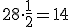
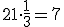
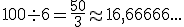

Expresiones que indican división o cociente
Cuando encuentres expresiones como las que verás a continuación, simplemente deberás remitirte a la operación de división.
a) La mitad de, un medio de: se trata de DIVIDIR ENTRE 2 o MULTIPLICAR POR  la cantidad indicada Ejemplo:
la cantidad indicada Ejemplo:
- La mitad de 16 será 8. porque
- Un medio de 28 será 14, porque 
b) La tercera parte de, un tercio de: Al igual que en el término anterior multiplicamos o dividimos, pero en este caso lo hacemos POR o ENTRE 3 respectivamente. Ejemplo:
- Un tercio de 18 será 6, porque
- La tercera parte de 21 será 7, porque 
Estas mismas reglas las aplicamos para la cuarta parte, la quinta parte, la sexta parte, etc.
c) El cociente de: Simplemente es otra forma de llamar a la división. Ejemplo
- El cociente entre 10 y 2 será 5, porque
- El cociente entre 24 y 12 será 2, porque
EVALÚO MIS AVANCES
Lee cada afirmación y luego responde si es falsa o verdadera. Luego cuenta el número de respuestas correctas y verifica tus resultados en la tabla para avanzar o repetir la clase:
Retroalimentación
Verdadero
Porque 24÷3=8
Retroalimentación
Falso
Porque 24÷2=12
Retroalimentación
Falso
Porque 35÷5=7
Retroalimentación
Verdadero
Porque 72 ÷ 9 = 8
Retroalimentación
Falso
porque 
Retroalimentación
Verdadero
Porque 72 ÷ 9 = 8
Retroalimentación
Falso
Porque 80 ÷ 4 = 20
Retroalimentación
Verdadero
Porque 250 x 1/2 = 125
Retroalimentación
Falso
Porque 123 x 1/3 = 41
Retroalimentación
Falso
Porque 90 ÷ 5 = 18
AHORA CUENTA TUS RESPUESTAS CORRECTAS Y COMPARA CON EL CUADRO
VERIFICACIÓN DE RESULTADOS
|
Número de respuestas correctas |
Nivel de Desempeño | Recomendación |
| 0 - 5 | BAJO | Debes repasar, repite esta sección |
| 6 - 7 | BÁSICO | Repite esta sección |
| 8 - 9 | ALTO | Corrige los errores |
| 10 | SUPERIOR | Pasa a la siguiente sección |